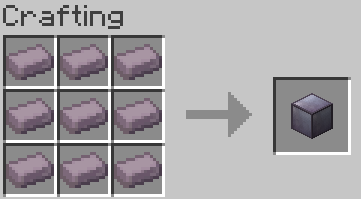

Indium!
The shining jewel of Indium OnyxPack, the Indium Ingot makes tons of cool tools/weapons, each with their own unique characteristics. However, they can be quite tricky to get.

Hitting a Phantom with an Iron Ingot turns the Iron into an Indium Ingot. This gives a better use to Phantoms and adds Extra Strategy (and business opportunities).
What can Indium Make?
Knife ScytheIndium Block
Yes you can make an Indium Block! You can even make beacons with them.